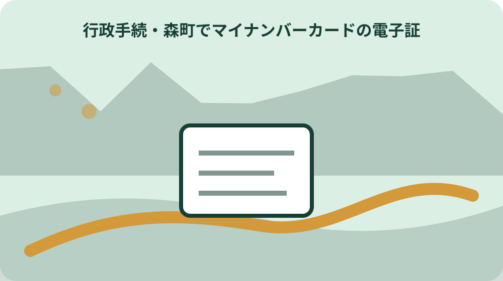

先に結論を確認する
この記事の答え：カード本体と電子証明書の期限を分けるため、対象者、基準日、公式資料、未確認事項を最初の一行へ置きます。
森町で最初に照合する条件：森町公式の内容が異なる二つの案内を2026-08-13に確認する
カード本体と電子証明書の期限を分ける
「カード本体と電子証明書の期限を分ける」の1段落では、カード本体と電子証明書の期限を分けるでは、マイナンバーカード本体と搭載された電子証明書は有効期限を別に確認します。「カード本体と電子証明書の期限を分ける」の1段落では、まず今回の対象者、基準日、手元資料を判断表の同じ行に置きます。「カード本体と電子証明書の期限を分ける」の1段落では、森町で電子証明書の期限・暗証番号・更新後利用を一枚にするは制度名だけを写す記事ではなく、今回の一件がどの条件に当たるかを家族と窓口が追える形にするための手順です。
「カード本体と電子証明書の期限を分ける」の2段落では、カード本体と電子証明書の期限を分けるを進めるときは、公式案内の記載と家族が把握している事情を左右に分けます。「カード本体と電子証明書の期限を分ける」の2段落では、根拠として確認できるのは「マイナンバーカード本体と搭載された電子証明書は有効期限を別に確認します」までです。「カード本体と電子証明書の期限を分ける」の2段落では、資料にない個別判断は未確認欄へ残し、都合のよい結論で埋めません。
「カード本体と電子証明書の期限を分ける」の3段落では、カード本体と電子証明書の期限を分けるに使う書類には、発行元、発行日、対象者、番号の種類を付記します。「カード本体と電子証明書の期限を分ける」の3段落では、次の「有効期限通知の対象者を確認する」へ渡す項目だけを選び、原本、写し、画面保存を同じ証拠として扱わないことが、後日のやり直しを減らします。
「カード本体と電子証明書の期限を分ける」の4段落では、カード本体と電子証明書の期限を分けるの窓口質問は、現在の状態、確認した公式資料、知りたい一点の順に短くします。「カード本体と電子証明書の期限を分ける」の4段落では、回答を受けたら担当部署、回答日、再確認が必要な条件を追記し、口頭回答だけで完了印を付けないようにします。
有効期限通知の対象者を確認する
「有効期限通知の対象者を確認する」の1段落では、有効期限通知の対象者を確認するでは、有効期限通知には更新対象と手続時期の情報があります。「有効期限通知の対象者を確認する」の1段落では、まず今回の対象者、基準日、手元資料を照合票の同じ行に置きます。「有効期限通知の対象者を確認する」の1段落では、森町で電子証明書の期限・暗証番号・更新後利用を一枚にするは制度名だけを写す記事ではなく、今回の一件がどの条件に当たるかを家族と窓口が追える形にするための手順です。
「有効期限通知の対象者を確認する」の2段落では、有効期限通知の対象者を確認するを進めるときは、公式案内の記載と家族が把握している事情を左右に分けます。「有効期限通知の対象者を確認する」の2段落では、根拠として確認できるのは「有効期限通知には更新対象と手続時期の情報があります」までです。「有効期限通知の対象者を確認する」の2段落では、資料にない個別判断は未確認欄へ残し、都合のよい結論で埋めません。
「有効期限通知の対象者を確認する」の3段落では、有効期限通知の対象者を確認するに使う書類には、発行元、発行日、対象者、番号の種類を付記します。「有効期限通知の対象者を確認する」の3段落では、次の「更新できる時期を通知で確かめる」へ渡す項目だけを選び、原本、写し、画面保存を同じ証拠として扱わないことが、後日のやり直しを減らします。
更新できる時期を通知で確かめる
「更新できる時期を通知で確かめる」の1段落では、更新できる時期を通知で確かめるでは、電子証明書更新ではカードと暗証番号を用意します。「更新できる時期を通知で確かめる」の1段落では、まず今回の対象者、基準日、手元資料を家族記録の同じ行に置きます。「更新できる時期を通知で確かめる」の1段落では、森町で電子証明書の期限・暗証番号・更新後利用を一枚にするは制度名だけを写す記事ではなく、今回の一件がどの条件に当たるかを家族と窓口が追える形にするための手順です。
「更新できる時期を通知で確かめる」の2段落では、更新できる時期を通知で確かめるを進めるときは、公式案内の記載と家族が把握している事情を左右に分けます。「更新できる時期を通知で確かめる」の2段落では、根拠として確認できるのは「電子証明書更新ではカードと暗証番号を用意します」までです。「更新できる時期を通知で確かめる」の2段落では、資料にない個別判断は未確認欄へ残し、都合のよい結論で埋めません。
「更新できる時期を通知で確かめる」の3段落では、更新できる時期を通知で確かめるに使う書類には、発行元、発行日、対象者、番号の種類を付記します。「更新できる時期を通知で確かめる」の3段落では、次の「署名用暗証番号を思い出す」へ渡す項目だけを選び、原本、写し、画面保存を同じ証拠として扱わないことが、後日のやり直しを減らします。
署名用暗証番号を思い出す
「署名用暗証番号を思い出す」の1段落では、署名用暗証番号を思い出すでは、署名用電子証明書と利用者証明用電子証明書は用途と暗証番号が異なります。「署名用暗証番号を思い出す」の1段落では、まず今回の対象者、基準日、手元資料を受付記録の同じ行に置きます。「署名用暗証番号を思い出す」の1段落では、森町で電子証明書の期限・暗証番号・更新後利用を一枚にするは制度名だけを写す記事ではなく、今回の一件がどの条件に当たるかを家族と窓口が追える形にするための手順です。
「署名用暗証番号を思い出す」の2段落では、署名用暗証番号を思い出すを進めるときは、公式案内の記載と家族が把握している事情を左右に分けます。「署名用暗証番号を思い出す」の2段落では、根拠として確認できるのは「署名用電子証明書と利用者証明用電子証明書は用途と暗証番号が異なります」までです。「署名用暗証番号を思い出す」の2段落では、資料にない個別判断は未確認欄へ残し、都合のよい結論で埋めません。
「署名用暗証番号を思い出す」の3段落では、署名用暗証番号を思い出すに使う書類には、発行元、発行日、対象者、番号の種類を付記します。「署名用暗証番号を思い出す」の3段落では、次の「利用者証明用暗証番号を分ける」へ渡す項目だけを選び、原本、写し、画面保存を同じ証拠として扱わないことが、後日のやり直しを減らします。
利用者証明用暗証番号を分ける
「利用者証明用暗証番号を分ける」の1段落では、利用者証明用暗証番号を分けるでは、暗証番号が分からない場合は更新と再設定の順を窓口へ確認します。「利用者証明用暗証番号を分ける」の1段落では、まず今回の対象者、基準日、手元資料を確認票の同じ行に置きます。「利用者証明用暗証番号を分ける」の1段落では、森町で電子証明書の期限・暗証番号・更新後利用を一枚にするは制度名だけを写す記事ではなく、今回の一件がどの条件に当たるかを家族と窓口が追える形にするための手順です。
「利用者証明用暗証番号を分ける」の2段落では、利用者証明用暗証番号を分けるを進めるときは、公式案内の記載と家族が把握している事情を左右に分けます。「利用者証明用暗証番号を分ける」の2段落では、根拠として確認できるのは「暗証番号が分からない場合は更新と再設定の順を窓口へ確認します」までです。「利用者証明用暗証番号を分ける」の2段落では、資料にない個別判断は未確認欄へ残し、都合のよい結論で埋めません。
「利用者証明用暗証番号を分ける」の3段落では、利用者証明用暗証番号を分けるに使う書類には、発行元、発行日、対象者、番号の種類を付記します。「利用者証明用暗証番号を分ける」の3段落では、次の「本人手続と代理手続を確認する」へ渡す項目だけを選び、原本、写し、画面保存を同じ証拠として扱わないことが、後日のやり直しを減らします。
本人手続と代理手続を確認する
「本人手続と代理手続を確認する」の1段落では、本人手続と代理手続を確認するでは、森町はマイナンバーカード交付までの手続きを公式ページで案内しています。「本人手続と代理手続を確認する」の1段落では、まず今回の対象者、基準日、手元資料を一件カードの同じ行に置きます。「本人手続と代理手続を確認する」の1段落では、森町で電子証明書の期限・暗証番号・更新後利用を一枚にするは制度名だけを写す記事ではなく、今回の一件がどの条件に当たるかを家族と窓口が追える形にするための手順です。
「本人手続と代理手続を確認する」の2段落では、本人手続と代理手続を確認するを進めるときは、公式案内の記載と家族が把握している事情を左右に分けます。「本人手続と代理手続を確認する」の2段落では、根拠として確認できるのは「森町はマイナンバーカード交付までの手続きを公式ページで案内しています」までです。「本人手続と代理手続を確認する」の2段落では、資料にない個別判断は未確認欄へ残し、都合のよい結論で埋めません。
「本人手続と代理手続を確認する」の3段落では、本人手続と代理手続を確認するに使う書類には、発行元、発行日、対象者、番号の種類を付記します。「本人手続と代理手続を確認する」の3段落では、次の「森町の受付日と時間を調べる」へ渡す項目だけを選び、原本、写し、画面保存を同じ証拠として扱わないことが、後日のやり直しを減らします。
森町の受付日と時間を調べる
「森町の受付日と時間を調べる」の1段落では、森町の受付日と時間を調べるでは、森町は日曜交付日を別ページで案内しており対象業務の確認が必要です。「森町の受付日と時間を調べる」の1段落では、まず今回の対象者、基準日、手元資料を引継ぎ表の同じ行に置きます。「森町の受付日と時間を調べる」の1段落では、森町で電子証明書の期限・暗証番号・更新後利用を一枚にするは制度名だけを写す記事ではなく、今回の一件がどの条件に当たるかを家族と窓口が追える形にするための手順です。
「森町の受付日と時間を調べる」の2段落では、森町の受付日と時間を調べるを進めるときは、公式案内の記載と家族が把握している事情を左右に分けます。「森町の受付日と時間を調べる」の2段落では、根拠として確認できるのは「森町は日曜交付日を別ページで案内しており対象業務の確認が必要です」までです。「森町の受付日と時間を調べる」の2段落では、資料にない個別判断は未確認欄へ残し、都合のよい結論で埋めません。
「森町の受付日と時間を調べる」の3段落では、森町の受付日と時間を調べるに使う書類には、発行元、発行日、対象者、番号の種類を付記します。「森町の受付日と時間を調べる」の3段落では、次の「日曜交付日の対象業務を確認する」へ渡す項目だけを選び、原本、写し、画面保存を同じ証拠として扱わないことが、後日のやり直しを減らします。
日曜交付日の対象業務を確認する
「日曜交付日の対象業務を確認する」の1段落では、日曜交付日の対象業務を確認するでは、代理人手続は本人手続と必要資料や当日の流れが異なります。「日曜交付日の対象業務を確認する」の1段落では、まず今回の対象者、基準日、手元資料を窓口メモの同じ行に置きます。「日曜交付日の対象業務を確認する」の1段落では、森町で電子証明書の期限・暗証番号・更新後利用を一枚にするは制度名だけを写す記事ではなく、今回の一件がどの条件に当たるかを家族と窓口が追える形にするための手順です。
「日曜交付日の対象業務を確認する」の2段落では、日曜交付日の対象業務を確認するを進めるときは、公式案内の記載と家族が把握している事情を左右に分けます。「日曜交付日の対象業務を確認する」の2段落では、根拠として確認できるのは「代理人手続は本人手続と必要資料や当日の流れが異なります」までです。「日曜交付日の対象業務を確認する」の2段落では、資料にない個別判断は未確認欄へ残し、都合のよい結論で埋めません。
「日曜交付日の対象業務を確認する」の3段落では、日曜交付日の対象業務を確認するに使う書類には、発行元、発行日、対象者、番号の種類を付記します。「日曜交付日の対象業務を確認する」の3段落では、次の「更新直後のサービス反映を待つ」へ渡す項目だけを選び、原本、写し、画面保存を同じ証拠として扱わないことが、後日のやり直しを減らします。
更新直後のサービス反映を待つ
「更新直後のサービス反映を待つ」の1段落では、更新直後のサービス反映を待つでは、更新後すぐに各オンラインサービスへ反映されない場合を見込みます。「更新直後のサービス反映を待つ」の1段落では、まず今回の対象者、基準日、手元資料を期限台帳の同じ行に置きます。「更新直後のサービス反映を待つ」の1段落では、森町で電子証明書の期限・暗証番号・更新後利用を一枚にするは制度名だけを写す記事ではなく、今回の一件がどの条件に当たるかを家族と窓口が追える形にするための手順です。
「更新直後のサービス反映を待つ」の2段落では、更新直後のサービス反映を待つを進めるときは、公式案内の記載と家族が把握している事情を左右に分けます。「更新直後のサービス反映を待つ」の2段落では、根拠として確認できるのは「更新後すぐに各オンラインサービスへ反映されない場合を見込みます」までです。「更新直後のサービス反映を待つ」の2段落では、資料にない個別判断は未確認欄へ残し、都合のよい結論で埋めません。
「更新直後のサービス反映を待つ」の3段落では、更新直後のサービス反映を待つに使う書類には、発行元、発行日、対象者、番号の種類を付記します。「更新直後のサービス反映を待つ」の3段落では、次の「利用予定日から余裕を取る」へ渡す項目だけを選び、原本、写し、画面保存を同じ証拠として扱わないことが、後日のやり直しを減らします。

利用予定日から余裕を取る
「利用予定日から余裕を取る」の1段落では、利用予定日から余裕を取るでは、確定申告など利用日が決まる手続より前に更新を終えます。「利用予定日から余裕を取る」の1段落では、まず今回の対象者、基準日、手元資料を資料束の同じ行に置きます。「利用予定日から余裕を取る」の1段落では、森町で電子証明書の期限・暗証番号・更新後利用を一枚にするは制度名だけを写す記事ではなく、今回の一件がどの条件に当たるかを家族と窓口が追える形にするための手順です。
「利用予定日から余裕を取る」の2段落では、利用予定日から余裕を取るを進めるときは、公式案内の記載と家族が把握している事情を左右に分けます。「利用予定日から余裕を取る」の2段落では、根拠として確認できるのは「確定申告など利用日が決まる手続より前に更新を終えます」までです。「利用予定日から余裕を取る」の2段落では、資料にない個別判断は未確認欄へ残し、都合のよい結論で埋めません。
「利用予定日から余裕を取る」の3段落では、利用予定日から余裕を取るに使う書類には、発行元、発行日、対象者、番号の種類を付記します。「利用予定日から余裕を取る」の3段落では、次の「大石の視点：使うサービス名を先に書く」へ渡す項目だけを選び、原本、写し、画面保存を同じ証拠として扱わないことが、後日のやり直しを減らします。
大石の視点：使うサービス名を先に書く
「大石の視点：使うサービス名を先に書く」の1段落では、大石の視点：使うサービス名を先に書くでは、デジタル庁はマイナンバー制度とカード利用を案内しています。「大石の視点：使うサービス名を先に書く」の1段落では、まず今回の対象者、基準日、手元資料を判断表の同じ行に置きます。「大石の視点：使うサービス名を先に書く」の1段落では、森町で電子証明書の期限・暗証番号・更新後利用を一枚にするは制度名だけを写す記事ではなく、今回の一件がどの条件に当たるかを家族と窓口が追える形にするための手順です。
「大石の視点：使うサービス名を先に書く」の2段落では、大石の視点：使うサービス名を先に書くを進めるときは、公式案内の記載と家族が把握している事情を左右に分けます。「大石の視点：使うサービス名を先に書く」の2段落では、根拠として確認できるのは「デジタル庁はマイナンバー制度とカード利用を案内しています」までです。「大石の視点：使うサービス名を先に書く」の2段落では、資料にない個別判断は未確認欄へ残し、都合のよい結論で埋めません。
「大石の視点：使うサービス名を先に書く」の3段落では、大石の視点：使うサービス名を先に書くに使う書類には、発行元、発行日、対象者、番号の種類を付記します。「大石の視点：使うサービス名を先に書く」の3段落では、次の「更新結果と次回期限を記録する」へ渡す項目だけを選び、原本、写し、画面保存を同じ証拠として扱わないことが、後日のやり直しを減らします。
更新結果と次回期限を記録する
「更新結果と次回期限を記録する」の1段落では、更新結果と次回期限を記録するでは、更新日、次回期限、確認したサービスを家族記録へ残します。「更新結果と次回期限を記録する」の1段落では、まず今回の対象者、基準日、手元資料を照合票の同じ行に置きます。「更新結果と次回期限を記録する」の1段落では、森町で電子証明書の期限・暗証番号・更新後利用を一枚にするは制度名だけを写す記事ではなく、今回の一件がどの条件に当たるかを家族と窓口が追える形にするための手順です。
「更新結果と次回期限を記録する」の2段落では、更新結果と次回期限を記録するを進めるときは、公式案内の記載と家族が把握している事情を左右に分けます。「更新結果と次回期限を記録する」の2段落では、根拠として確認できるのは「更新日、次回期限、確認したサービスを家族記録へ残します」までです。「更新結果と次回期限を記録する」の2段落では、資料にない個別判断は未確認欄へ残し、都合のよい結論で埋めません。
「更新結果と次回期限を記録する」の3段落では、更新結果と次回期限を記録するに使う書類には、発行元、発行日、対象者、番号の種類を付記します。「更新結果と次回期限を記録する」の3段落では、次の「カード本体と電子証明書の期限を分ける」へ渡す項目だけを選び、原本、写し、画面保存を同じ証拠として扱わないことが、後日のやり直しを減らします。